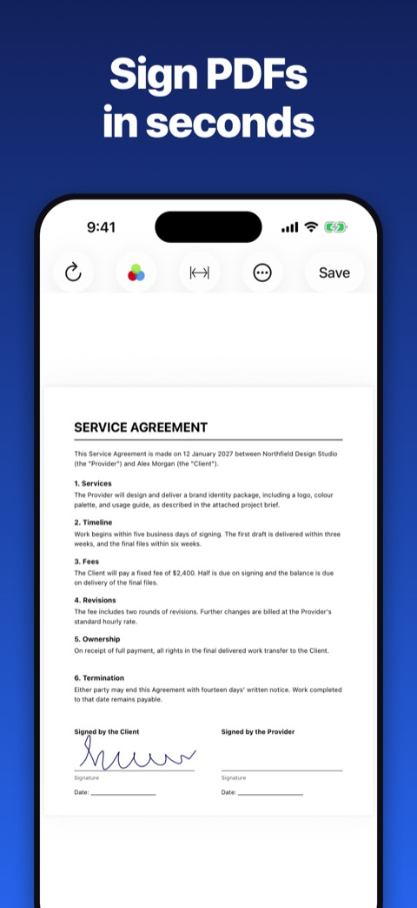
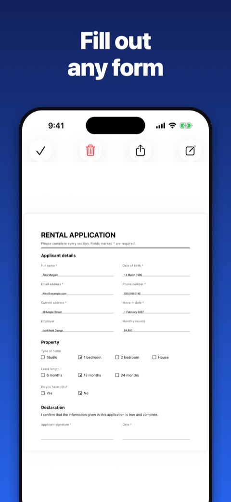

Fill out and sign PDFs on your iPhone and iPad
PDF Pencil lets you type into forms, sign contracts and write on any PDF with your finger or Apple Pencil. No printer, no scanner, no computer.
Download on the App Store Free to download. The full version unlocks unlimited scanning and sharing.


What you can do
- Fill out forms: add typed text, ticks and handwritten notes to any PDF form.
- Sign: sign like on paper, with your finger or Apple Pencil. The ink is vector, so it stays sharp when you zoom in or print.
- Private signatures: your signature is never saved, not even inside the app.
- Write and mark up: pick ink colour and thickness, with undo and redo.
- Scan: turn paper into a PDF with auto-capture, crop, rotate and black-and-white.
- Organise and protect: rearrange, copy or delete pages, and lock files with a password.
- Open and share anywhere: iCloud Drive, Dropbox, OneDrive, Google Drive, the share sheet and AirPrint.
Step-by-step guides
- How to fill out a PDF form on iPhoneType into a form you got by email, then send it back.
- How to sign a PDF on iPhoneAdd a real handwritten signature without printing.
- How to write on a PDF with Apple Pencil or your fingerHandwritten notes, ticks and drawings on any page.
- How to scan and sign a paper document on iPhoneGot a paper form? Scan it, sign it, send it.
Why not print, sign and scan?
Printing a form just to sign it and scan it back takes time, a printer and a scanner. On your phone it takes a minute, the result is cleaner, and your document never leaves your device unless you send it.